A social media tool and a microblogging platform that allows its users to publish microblogs or short blog posts. This application or software can also be explained simply by describing it like Facebook, Twitter and a blog e.g. WordPress and Blogger. It was also known as "Tumblelogging" that went before Tumblr itself. Microblogging also means people post quickly and a small paragraph compared to a typical diary entry style of a traditional blog. Tumblr was first created in 2007 by David Karp and later, it was purchased by Yahoo! for $1.1 billion in 2013. He was inspired by two blog designs created by other people. His style was new and advanced so that you can personalise your account. This is why Tumblr attracts teens because it has appealing features where they can express themselves and connect to like-minded people. It is also popular for its heavily customized pages and profile with a limited design. You can also share anything in Tumblr such as music, videos, images and even gifs. This is the reason why Tumblr is an attractive application for business people who are strongly interested in accentuating their brand. Their business page can be easily recognised and followed by users who are interested in their work and ideas by liking, sharing and commenting in their blogs. Tumblr is not only for business and entertainment purposes as it also a great source if you want to be inspired by something you want to do.
A social media tool and a microblogging platform that allows its users to publish microblogs or short blog posts. This application or software can also be explained simply by describing it like Facebook, Twitter and a blog e.g. WordPress and Blogger. It was also known as "Tumblelogging" that went before Tumblr itself. Microblogging also means people post quickly and a small paragraph compared to a typical diary entry style of a traditional blog. Tumblr was first created in 2007 by David Karp and later, it was purchased by Yahoo! for $1.1 billion in 2013. He was inspired by two blog designs created by other people. His style was new and advanced so that you can personalise your account. This is why Tumblr attracts teens because it has appealing features where they can express themselves and connect to like-minded people. It is also popular for its heavily customized pages and profile with a limited design. You can also share anything in Tumblr such as music, videos, images and even gifs. This is the reason why Tumblr is an attractive application for business people who are strongly interested in accentuating their brand. Their business page can be easily recognised and followed by users who are interested in their work and ideas by liking, sharing and commenting in their blogs. Tumblr is not only for business and entertainment purposes as it also a great source if you want to be inspired by something you want to do.
Versions available: Tumblr is available as an app on apple devices and android. It can also be accessed on desktop as a website. How do you register: The app is free and can be installed from your device's app store. If you're on desktop you can search www.tumblr.com.
When you open the app, the opening page gives you an option to "Get started" or "Log in." By clicking "Get started" you can begin the process of setting up an account.
You'll be asked to accept Tumblr''s terms and conditions before moving on. After this, you have to confirm your age.
The next step is choosing what type of content you would like to see on your dashboard so it's easier to find blogs that post about your interests. You'll be shown a grid of options and are expected to choose at least 5. If you can't find what you're looking for, you can click the plus symbol in the top left and search whatever topic you want.
After completing this step, you'll be brought to your dashboard. By clicking the icon in the bottom right, a pop up will ask you to enter your email, password and a username. If the username you entered is unavailable, you'll be given a temporary one which you can change in your settings.
A link will be sent to your email, asking you to verify your email address. Once you have done so, your account is ready to go.
On Tumblr a user's primary use of the platform is to create Posts on their blogs of differing formats. Tumblr provides seven post formats for users to found on their blog's dashboard. All post formats are opened by clicking its respective symbol on the dash or through the post button at the top right.
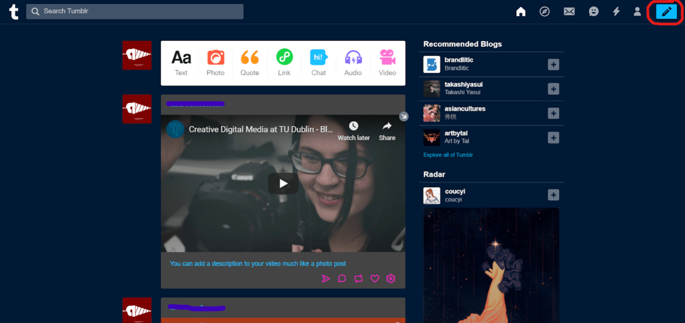The first and most basic of these is a text post which is found on all blogging platforms which involves creating a post of mainly text. Firstly a title is given to the top of the post and the following section is for the main text content of the post with the included ability to integrate images, videos and GIFs into this section. These posts are flexible and can be used for a multitude of tasks.
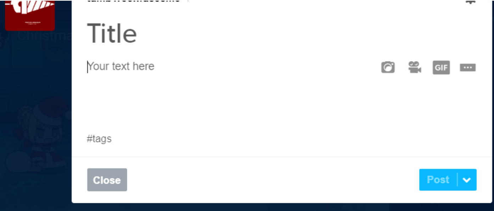The next post format is a photo post which involves choosing an image/images(either uploaded from the device or from the internet by pasting a URL) as the primary content of the post. This image/images are then followed by a caption section in which you can type out a caption for the image which can integrate images/videos/GIFs into the caption. This format can be used to showcase work such as artwork or photography.
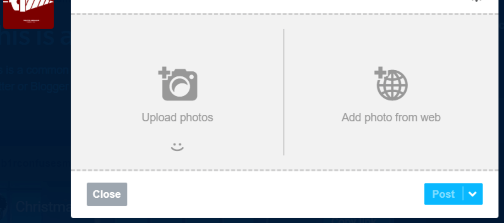 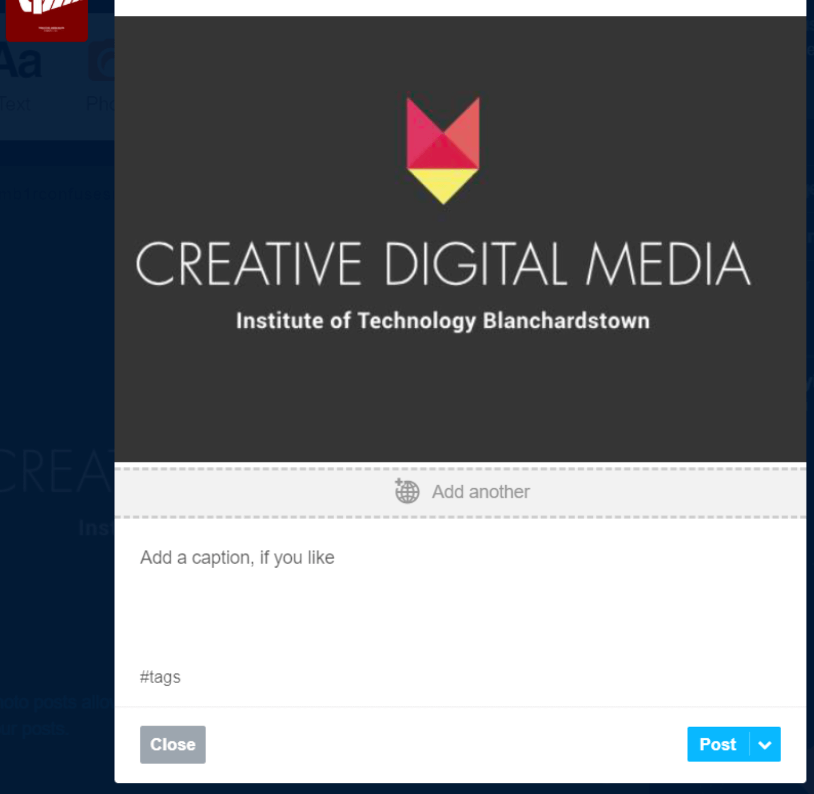The next posting format is the quote post which makes a large font quote the primary content followed by a Source section to source your quote or add extra information. This format is not commonly used and does not have a lot of academic uses.
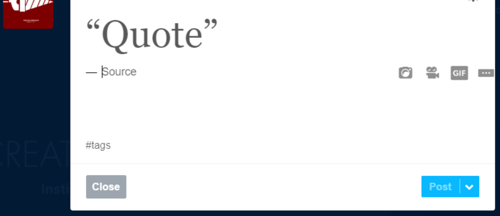The next post format is a link post which allows users to share a link as their main content for the post while also giving the link a personalized/external title and summary. Tumblr also allows users to add a description to their post similar to most of the other post formats. This can be used to fluidly link to external websites directly from a blog.
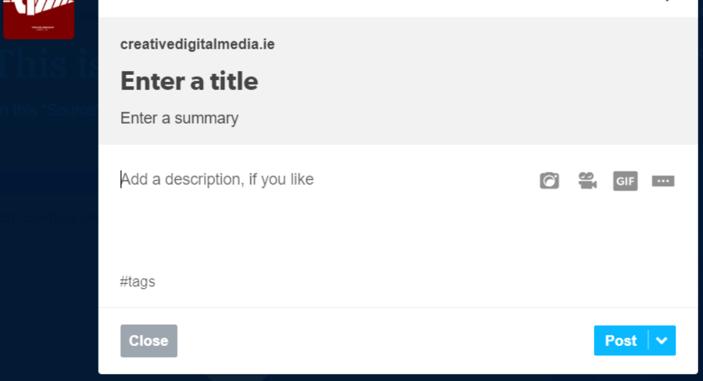The next post format is the chat post which is used to transcribe a conversation into a blog post. This is accomplished through the automatic formatting applied to the text in the post. Following the title, all content in the main section of the post receives this formatting. All text on a line before a colon is bolded and text that follows is left normal. This format is mainly for comedic or documentary purposes and thus has little academic use.
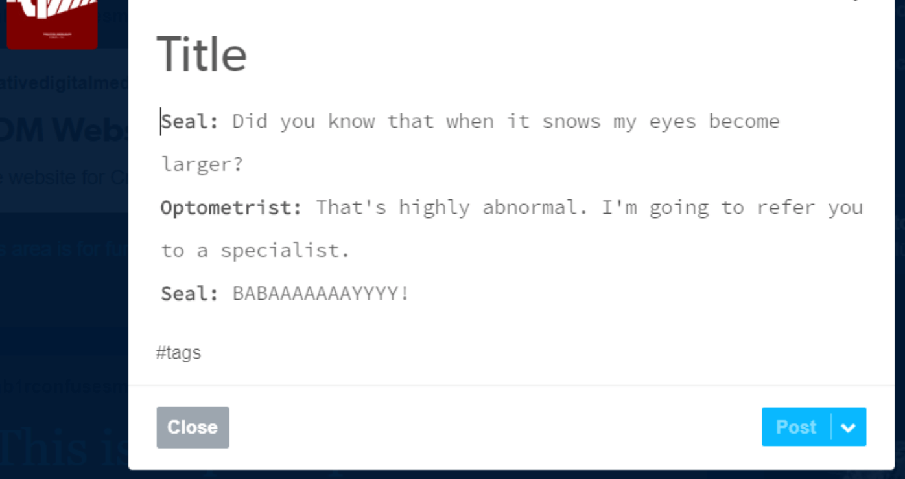The next post format is the audio post which integrates an audio track as the primary content of the post. This audio track is either sourced directly through Tumblr's search engine which sources from Spotify or Soundcloud, by pasting an audio tracks URL into Tumblr or by manually uploading audio from your device. Users can also add a text caption to the audio with integrated images/videos/GIFs. This post can be used to share songs, podcasts or any other audio one would wish to share as long as it does not violate copyright law or Tumblr's Terms and Conditions.
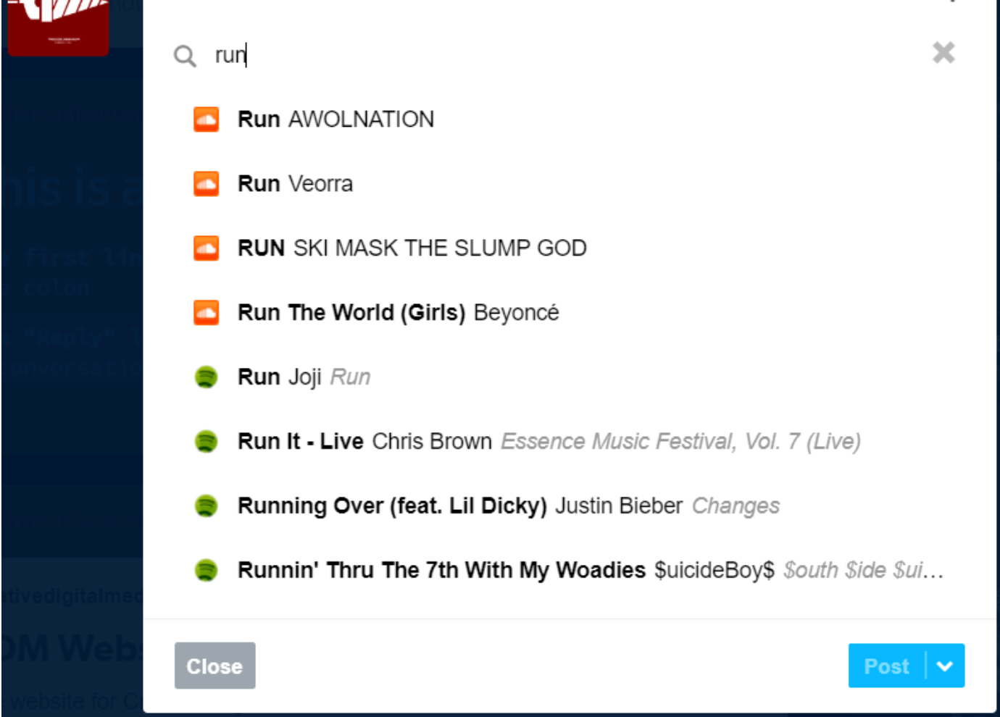The final post format is a video post which integrates a video as the primary content of the post. Videos can be sourced through URLs or uploaded directly from a users device. Videos sourced through URLs are fully integrated into the post if the URLs source is compatible such as from YouTube. Similar to an audio post this format could be used to share any type of video content as long as it does not violate copyright or Terms and Conditions.
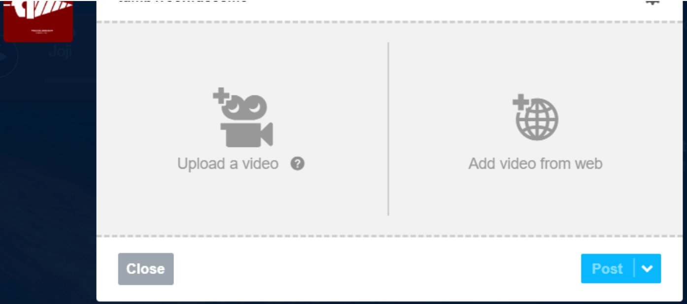 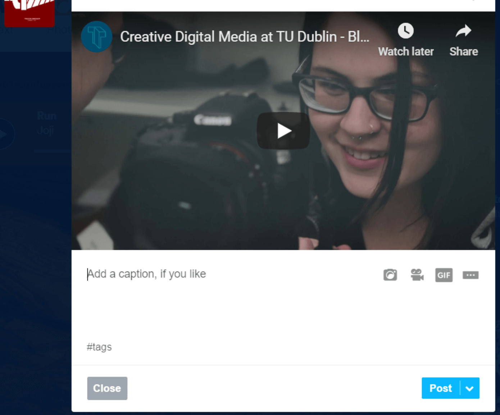The digital Age Of consent in Ireland is set at 16 years of age. You must need the consent of a parent or a guardian if you are under 16. Tumblr also has a setting to keep your account more secure by activating "secure Sockets Layer" that creates a link between a browser and a web server. All the blogs are set on public by default. However, you can change the set up on you second blog to keep it private. You can also block other users from interacting with you If they or their blogs make you uncomfortable, but you can't prevent them from checking your blog. Tumblr offers Two-Factor Authentication as well. If this is turned on via your account, it will send you a code to your phone that you must use in order to log in. Blogs on tumblr are not screened or examined by their Headquarters meaning, anyone can encounter unpleasant content and other explicit material. All the blogs are set on public by default. However, you can change the set up on you second blog to keep it private. Tumblr lacks limitations or rules in the content that are created. Because of this, parents must also be more careful if they give their young children permission to use the app as they could come across hardcore pornography on this site as this application is a totally open platform.
Tumblr's issue security in 2011. Over 748 lines of sensitive information was exposed to the public and even the first people who used the platform could access administrator privileges for any account just by adding "admin" to a URL. Tumblr tried to fix the issue throughout the years to keep it safer. Unfortunately, due to constant new threats, Tumblr and any social network, is not 100% safe anymore.
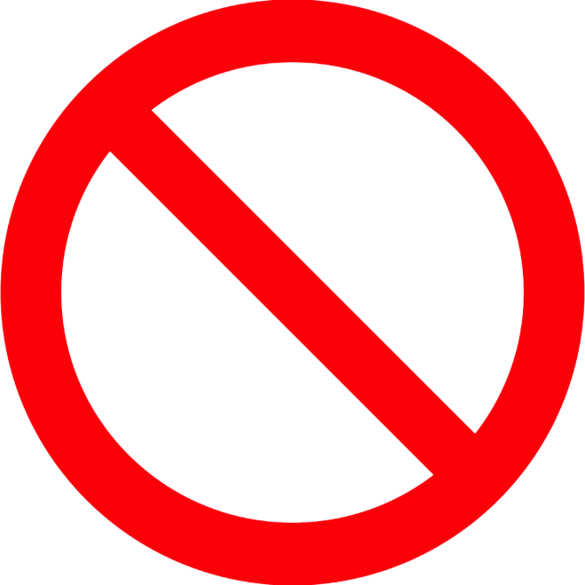Adult content was permanently banned from its platform on 17th of December 2018. the ban included explicit sexual content and nudity with few exceptions such as illustrations and art related featuring nudity and so are breastfeeding and after birth photos. Videos, GIFs, photos and any media showing any sexual acts are also banned. After the new policy announcement, Apple's iOS App Store removed Tumblr because of a child pornography incident. There is a link where the former CEO of Tumblr, Jeff D'Onofrio wrote a blog about the situation.
Tumblr is a content sharing application which makes it a useful resource tool for people to engage with professional work and to learn more about how others view and work. Along with this, there are many teachers that have accounts dedicated to teaching for and educators own classroom and courses such as Teaching with Tumblr, Classroom Collective and Classroom Collective. For the purpose of musical education, Tumblr has a music sharing source on the website. Tumblr also invites people to learn about not only new and exciting art forms or styles but also about people's opinions of those styles and forms, as under posts there is the opportunity for commenting your thoughts. Through this, we can learn about so much more of people's experiences and other pieces of knowledge that the commenter has put under.